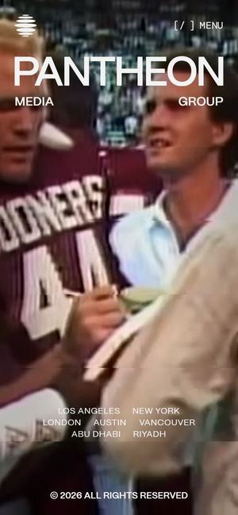
Awwwards 오늘의 사이트 · 2025.09먼저 보세요01Pantheon Media Group
와 포인트화면 위를 꽉 채운 'PANTHEON' 글자 아래로 서로 다른 작품 영상이 번갈아 재생됩니다. 글자와 영상만으로 큰 회사라는 인상을 줍니다.
키벨로라면화면 폭만큼 큰 'KIVELO' 아래로 AI 작품 하이라이트가 번갈아 재생되는 첫 화면. 다크 테마와 가장 잘 어울리는 정공법입니다.
KIVELO · AI 영상 플랫폼 디자인 레퍼런스 보드
AI로 만든 시네마와 쇼츠, 그리고 작품마다 붙는 AI 제작정보. 키벨로가 가진 재료를 '들어오자마자 와' 하는 화면으로 바꾸기 위한 레퍼런스 28곳입니다. 카드의 영상은 실제 사이트 첫 화면을 그대로 녹화한 것입니다.
추천 조합부터 보기아직 사이트는 없지만 재료는 분명합니다. 이 다섯 가지가 디자인의 출발점입니다.
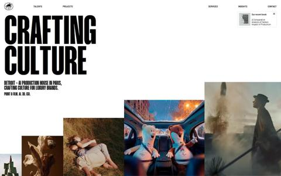
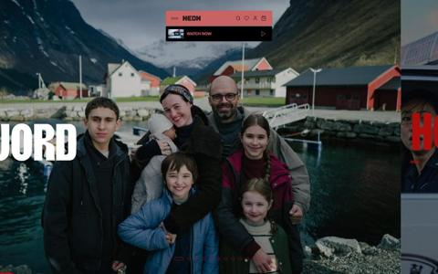
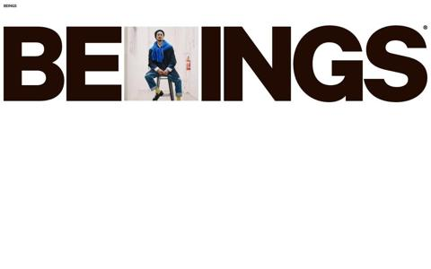
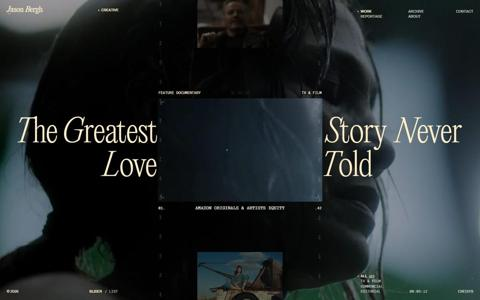
해외 영화·영상 제작사 중 최근(2025~2026) Awwwards 오늘의 사이트 수상작입니다. 공통점은 하나, 글보다 작품 장면과 큰 이름이 먼저 나옵니다.

Awwwards 오늘의 사이트 · 2025.09먼저 보세요01와 포인트화면 위를 꽉 채운 'PANTHEON' 글자 아래로 서로 다른 작품 영상이 번갈아 재생됩니다. 글자와 영상만으로 큰 회사라는 인상을 줍니다.
키벨로라면화면 폭만큼 큰 'KIVELO' 아래로 AI 작품 하이라이트가 번갈아 재생되는 첫 화면. 다크 테마와 가장 잘 어울리는 정공법입니다.
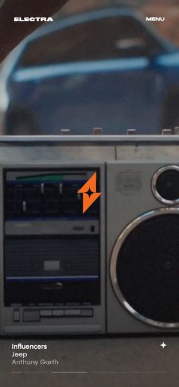
Awwwards 오늘의 사이트 · 2025.07먼저 보세요02와 포인트주황 띠가 화면을 열면 작품 장면이 하나씩 화면 전체로 바뀌고, 왼쪽 아래에 작품 이름과 참여자가 작게 붙습니다.
키벨로라면작품 장면 위에 '제목 · 창작자 · 사용한 AI 도구'를 작게 붙여 넘기는 첫 화면. AI 제작정보가 따로 설명하지 않아도 자연스럽게 보입니다.
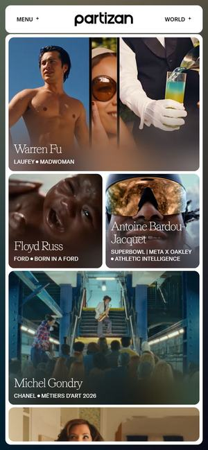
Awwwards 오늘의 사이트 · 2026.0703와 포인트로고가 지나가면 크기가 다른 작품 장면들이 액자처럼 화면을 가득 채웁니다. 한 화면이 작은 상영관처럼 보입니다.
키벨로라면시네마 대표작 장면을 크기가 다른 액자로 채운 첫 화면. 하나를 누르면 바로 그 작품으로 — 작품이 적어도 꽉 차 보입니다.
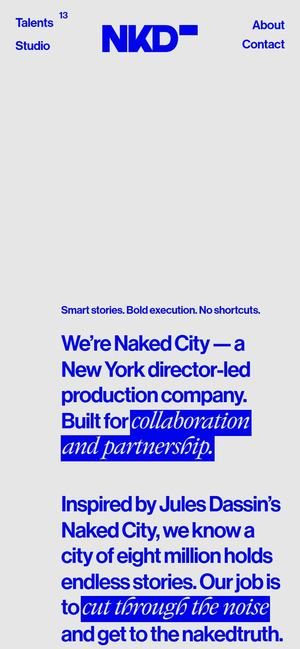
Awwwards 오늘의 사이트 · 2026.0104와 포인트영상 위에 파란 'NKD CITY' 로고 블록이 얹히고 뒤의 영상이 계속 바뀝니다. 아래로 내리면 작품 썸네일 격자로 이어집니다.
키벨로라면'KIVELO' 로고 블록 뒤로 시네마와 쇼츠 장면이 몇 초씩 바뀌는 첫 화면. 브랜드와 작품을 한 번에 기억시키는 가장 간단한 방법입니다.
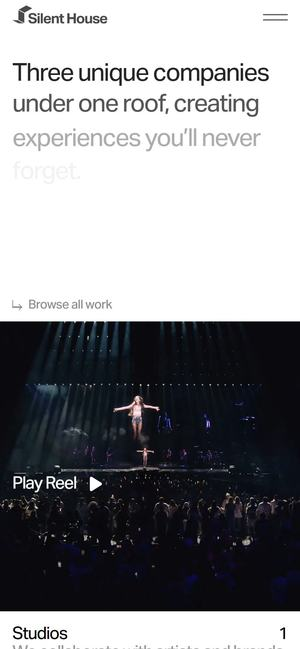
Awwwards 오늘의 사이트 · 2026.0405와 포인트'Studios', 'Productions'처럼 사업 이름이 큰 글씨로 지나갈 때마다 그 분야 영상이 화면을 채웁니다. 이어서 'Play Reel'로 전체 영상을 봅니다.
키벨로라면시네마 · 쇼츠 · 오리지널을 같은 방식으로. 이름이 지나갈 때마다 그 영역의 대표 영상이 화면을 채우는 첫 화면입니다.
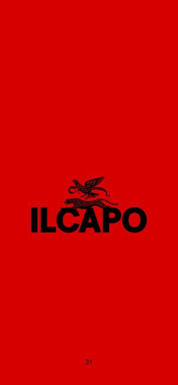
Awwwards 오늘의 사이트 · 2026.0606와 포인트빨간 화면에 로고 하나로 시작해, 로고가 커지며 작품 장면으로 넘어갑니다. 색 하나로 브랜드를 각인시킵니다.
키벨로라면키벨로의 상징색 하나로 첫 화면을 채우고, 그 색이 첫 작품 장면으로 이어지는 인트로. 다크 테마 안에서 브랜드 색을 기억시키는 방법입니다.
AI로 영상을 만드는 제작사와 AI 서비스 중 최근 수상작입니다. 차갑고 기계적인 AI가 아니라, 감성적이고 고급스럽게 AI를 보여줍니다.
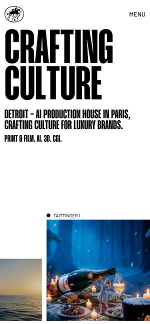
Awwwards 오늘의 사이트 · 2026.04먼저 보세요07와 포인트'CRAFTING CULTURE' 큰 글씨 옆으로 AI로 만든 이미지와 영상이 크기를 달리해 계속 바뀝니다. AI 작품을 취향 좋은 갤러리처럼 보여줍니다.
키벨로라면키벨로 첫 화면의 정답에 가장 가까운 곳. AI 작품을 크기를 달리해 걸어두고, 큰 글씨 한 줄로 '여기는 AI 영상관'이라고 말합니다.
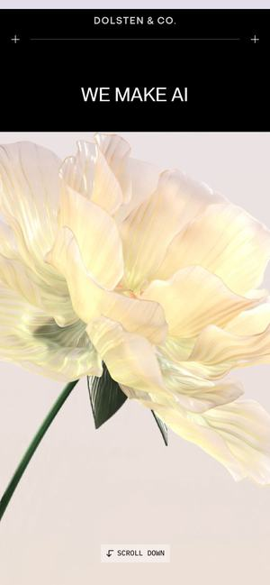
Awwwards 오늘의 사이트 · 2025.07먼저 보세요08와 포인트꽃봉오리가 천천히 피어나는 동안 'WE MAKE AI' 옆 단어가 'Beautiful', 'Emotional'처럼 바뀝니다. AI를 차갑지 않게 보여줍니다.
키벨로라면'AI로 만든 영상이 이렇게 감동적일 수 있다'를 첫 장면 하나로. 키벨로 오리지널 작품의 한 장면이 피어나듯 열리는 인트로입니다.
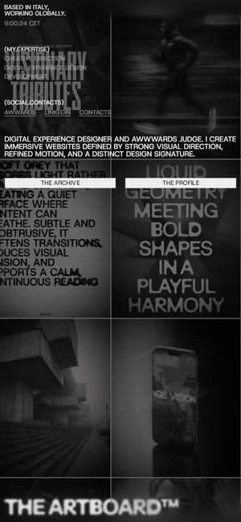
Awwwards 오늘의 사이트 · 2026.0209와 포인트흑백 사진과 큰 제목이 신문처럼 빽빽하게 깔린 판을 움직이며 둘러봅니다. AI 스케치와 작업 사례가 한 판에 섞여 있습니다.
키벨로라면작품 포스터와 AI 제작 노트를 한 판에 깔아 둔 '키벨로 작품 벽'. 둘러보다 마음에 드는 작품을 누르는 탐색입니다.
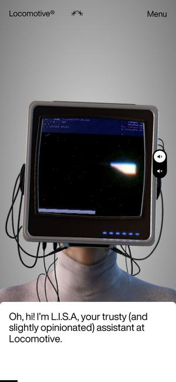
Awwwards 오늘의 사이트 · 2026.0910와 포인트머리 대신 옛날 TV를 쓴 인물이 자기를 'L.I.S.A.'라고 소개하고, TV 화면 속 표정과 영상이 바뀌며 말을 겁니다.
키벨로라면키벨로의 'AI 큐레이터' 캐릭터. 오늘 기분이나 좋아하는 장르를 말하면 TV 화면에 맞춤 작품을 띄워줍니다.
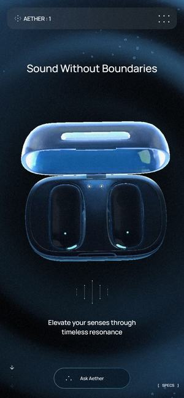
Awwwards 오늘의 사이트 · 2025.0811와 포인트짙은 파란 공간에 물결이 퍼지며 제품이 돌아갑니다. 수상 페이지 설명대로 AI에게 물어보며 둘러보는 대화창이 함께 있습니다.
키벨로라면작품 상세의 'AI에게 이 작품 묻기'. 어떤 도구로 만들었는지, 비슷한 작품은 무엇인지 대화로 알려주는 화면입니다.
영화 배급사, AI로 영화 장면을 찾는 서비스, 영화 제작사의 수상작입니다. 작품을 크게, 적게, 분명하게 보여줍니다.
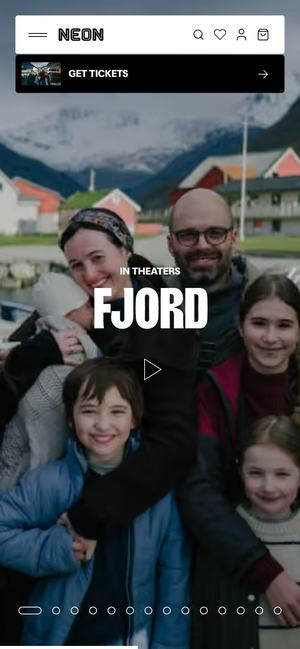
Awwwards 오늘의 사이트 · 2026.02먼저 보세요12와 포인트화면을 꽉 채운 작품 장면 위에 큰 제목과 예매 버튼. 내리면 예고편, 곧 개봉할 작품, 지금 볼 수 있는 작품 줄로 이어집니다.
키벨로라면작품이 많지 않아도 충분합니다. 한 편씩 화면 전체를 쓰는 '이번 주 공개작'과 '곧 공개'를 나눠, 작품이 적은 것을 오히려 큐레이션처럼 보이게 합니다.
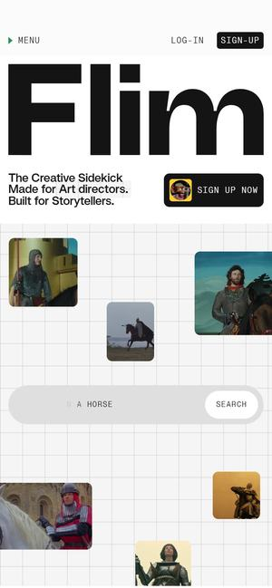
Awwwards 오늘의 사이트 · 2025.12먼저 보세요13와 포인트검색창에 '말(horse)'처럼 적으면 영화와 광고 장면들이 떠다니며 모입니다. 아래로 내리면 장면이 사진첩처럼 펼쳐집니다.
키벨로라면AI 제작정보로 찾기. '실사 같은 애니메이션', 'Runway로 만든 작품'처럼 적으면 장면들이 모이는 키벨로 검색입니다. 차별점이 곧 탐색 기능이 됩니다.
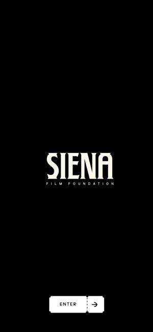
Awwwards 오늘의 사이트 · 2025.0314와 포인트ENTER를 누르면 작품 포스터와 평론가 별점, 한 줄 평이 극장 간판처럼 걸리고, 작품을 넘기면 화면이 통째로 바뀝니다.
키벨로라면작품 상세를 영화 간판처럼. 큰 장면 옆에 별점 대신 '끝까지 본 비율', 평론가 한 줄 대신 'AI 제작정보 한 줄'을 겁니다.
소셜 영상 전문 에이전시와 음악 플레이어 콘셉트 수상작입니다. 짧은 영상을 넘기는 손맛과, 플레이어 자체를 브랜드로 만든 사례입니다.
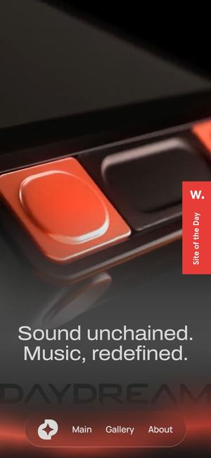
Awwwards 오늘의 사이트 · 2025.0715와 포인트빨간 화면에서 3D 플레이어 기기가 돌며 나타나고, 버튼과 화면이 실제 기계처럼 보입니다.
키벨로라면키벨로 쇼츠 플레이어를 '기기'처럼. 넘기기 · 좋아요 · 본편 보기 버튼을 손에 잡히는 모양으로 만들면 흔한 세로 피드와 다르게 기억됩니다.
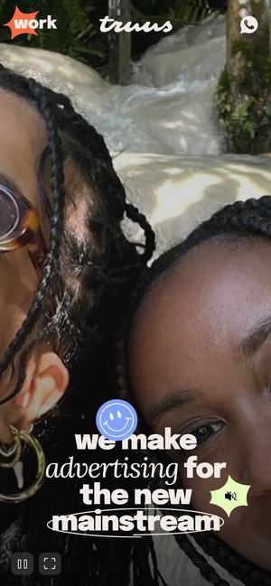
Awwwards 오늘의 사이트 · 2025.0916와 포인트둥근 화면 속 영상 위로 문장이 손글씨처럼 써지고 스티커 같은 그래픽이 튀어나옵니다. TV부터 틱톡까지 만드는 곳이라고 말합니다.
키벨로라면쇼츠 화면의 분위기. 영상 위에 창작자 이름과 '본편 보러 가기'가 스티커처럼 붙는 가벼운 손맛입니다.
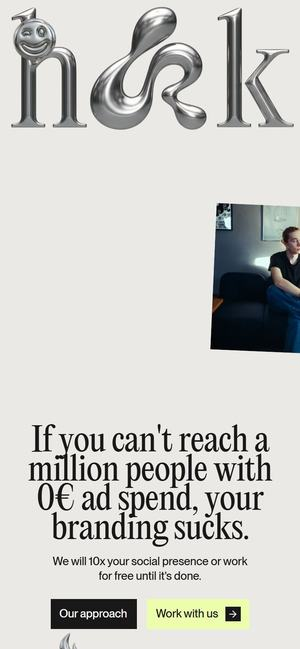
Awwwards 오늘의 사이트 · 2026.0717와 포인트큰 이름과 짧은 한 줄 뒤에, 휴대폰 화면 모양의 세로 콘텐츠들이 이어집니다.
키벨로라면창작자 모집 페이지의 화법. '키벨로에 올리면 이렇게 보입니다'를 휴대폰 화면 그대로 보여줍니다.
감독·CG 작가 포트폴리오와 캐스팅 디렉터리 수상작입니다. 사람과 작품을 한 화면에서 기억시키는 방법입니다.
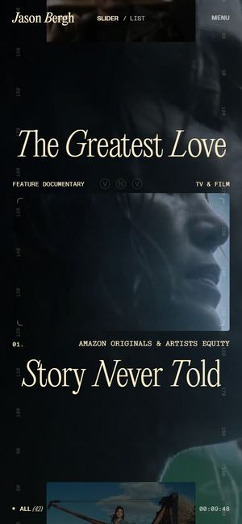
Awwwards 오늘의 사이트 · 2026.0318와 포인트작품 제목이 우아한 글씨로 좌우에 갈라지고, 그 사이로 작품 영상이 흐릅니다. 작품마다 같은 틀로 넘어갑니다.
키벨로라면작품 상세의 크레딧 화면. 제목은 좌우로, 가운데엔 장면, 아래엔 '각본은 사람 · 영상은 AI' 같은 제작정보를 둡니다.
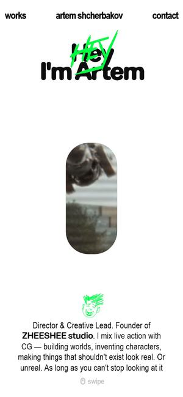
Awwwards 오늘의 사이트 · 2026.0719와 포인트짧은 자기소개 옆 작은 창 속 영상이 바뀌다가, 스크롤하면 거대한 로봇 CG 장면이 화면을 채웁니다.
키벨로라면창작자 페이지 첫 화면. 자기소개 옆에 대표작 한 장면, 스크롤하면 그 작품이 화면 가득. 창작자가 링크를 자랑하고 싶어지는 페이지입니다.
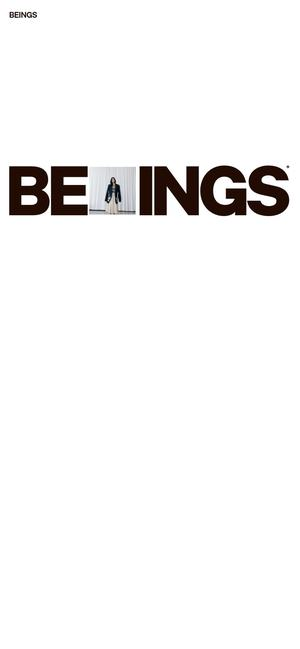
Awwwards 오늘의 사이트 · 2025.0620와 포인트화면 폭을 꽉 채운 'BEINGS' 글자 사이에 사람 사진이 끼어들고, 아래로 내리면 인물 사진이 큼직하게 이어집니다.
키벨로라면키벨로 '창작자 찾기'. 창작자 사진과 대표작 장면은 큼직하게, 이름은 크게. 보는 사람도 창작자도 기억하기 쉬운 목록입니다.
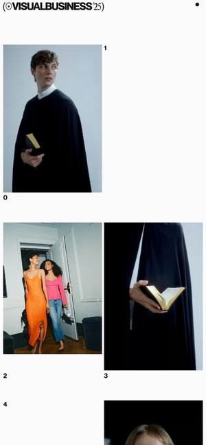
Awwwards 오늘의 사이트 · 2025.0521와 포인트흰 바탕에 인물 사진과 영상이 번호와 함께 흩어져 있고, 스크롤하면 위치를 바꾸며 다시 배열됩니다.
키벨로라면쇼츠를 '흩어진 갤러리'로. 번호가 붙은 작은 화면들이 움직이다 하나를 누르면 세로로 크게 재생합니다.
지디웹(GDWEB) 선정작 중 영화제, 영상위원회, 콘텐츠 회사, AI 브랜드 사이트입니다. 국내 이용자에게 익숙한 화법의 기준이 됩니다.
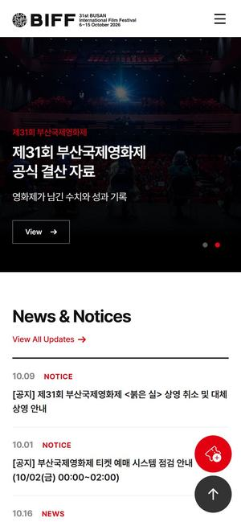
지디웹 선정 · 2026.1022와 포인트어두운 극장 객석 장면 위에 올해 소식이 큰 글씨로 올라오고, 아래로 공식 선정작과 행사 소식이 이어집니다.
키벨로라면다크 테마와 극장 분위기의 국내 기준. 키벨로 '이번 주 공개작'을 극장 객석 장면 위에 올리는 첫 화면입니다.
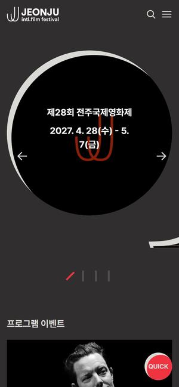
지디웹 선정 · 2026.0623와 포인트검정 · 빨강 · 파랑 도형이 카드처럼 겹친 첫 화면에 개막 날짜와 수상작 소식이 들어갑니다.
키벨로라면작품 장면이 없어도 꽉 차 보이는 '그래픽 카드' 첫 화면. 출시 직후 작품이 적을 때 쓰기 좋습니다.
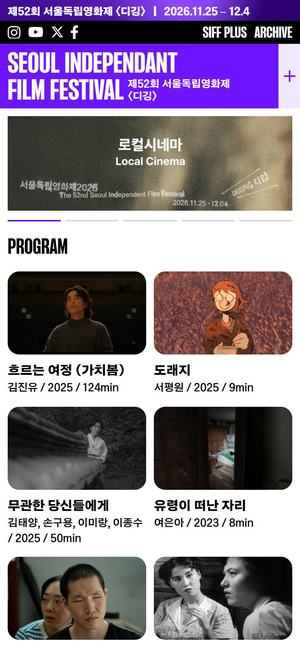
지디웹 선정 · 2025.1124와 포인트큰 제목 아래 '로컬시네마' 같은 섹션 배너를 좌우로 넘기고, 그 아래 상영 작품 포스터가 줄지어 나옵니다.
키벨로라면신인 창작자 작품을 '섹션'으로 묶어 넘기는 방식. 키벨로 초기 창작자 소개에 그대로 쓸 수 있습니다.
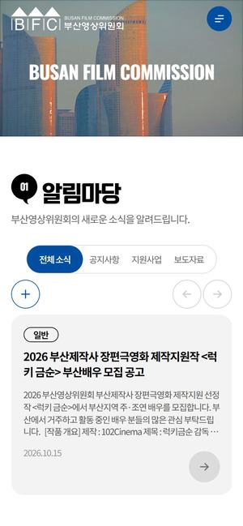
지디웹 선정 · 2026.0325와 포인트부산 바다 영상 위로 'BUSAN FILM COMMISSION'이 글자 단위로 나타나고, 지원한 작품 수가 숫자로 올라갑니다.
키벨로라면숫자가 올라가는 연출은 출시 초기엔 '이번 달 새로 올라온 작품'처럼 늘어나는 숫자에만 씁니다. 작은 총합을 크게 보여주지 않는 것이 요령입니다.
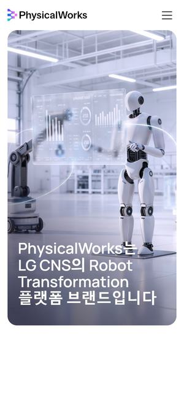
지디웹 선정 · 2026.0926와 포인트밝은 공장 속 로봇 장면 위에 큰 한글 문장이 얹히고, 스크롤하면 서비스 설명이 차분히 이어집니다.
키벨로라면국내 AI 브랜드 사이트 중 가장 정돈된 예. 'AI로 만든 영화, 한곳에서' 같은 키벨로 소개 문장을 이렇게 큰 한글 한 줄로 겁니다.
와 포인트첫 화면에서 자사 유튜브 콘텐츠 영상이 바로 재생되고, 콘텐츠 이름과 '보러 가기' 버튼이 붙습니다.
키벨로라면오리지널 시리즈를 첫 화면에서 바로 재생. 키벨로 오리지널 1편을 이렇게 걸어두면 그 작품이 플랫폼의 얼굴이 됩니다.
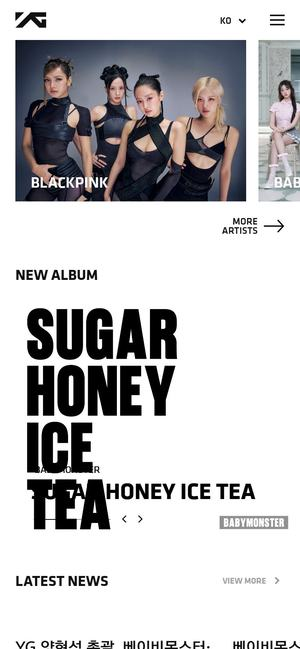
지디웹 선정 · 2024.0128와 포인트소속 아티스트 사진이 큰 카드로 첫 화면을 채우고, 스크롤하면 새 소식이 큰 글씨와 함께 이어집니다.
키벨로라면창작자를 첫 화면의 주인공으로. 키벨로 '이달의 창작자' 섹션의 국내 기준입니다.
큰 글씨 한 줄과 AI 작품 갤러리로 '여기는 AI 영상관'을 보여주고, 장면마다 제작정보를 자막처럼 붙입니다. 제작정보로 찾는 검색과 손맛 있는 쇼츠 플레이어로 마무리. 키벨로의 차별점인 AI 제작정보가 화면 전체에 녹아 있어 권장합니다.
화면 폭만큼 큰 KIVELO와 작품 영상, 한 편씩 크게 보여주는 상영작, 크레딧 같은 작품 상세. 실패할 확률이 가장 낮고 다크 테마와 잘 맞습니다.
AI 안내 캐릭터가 취향을 묻고 작품을 골라주는 키벨로만의 경험. 가장 새롭지만 만들 것이 많아, 1차 출시보다는 다음 단계에 어울립니다.
위 조합 중 하나를 고르시면, 그 조합으로 키벨로 홈 첫 화면과 작품 상세(AI 제작정보 카드 포함), 쇼츠 화면 시안을 만들어 보여드리겠습니다.